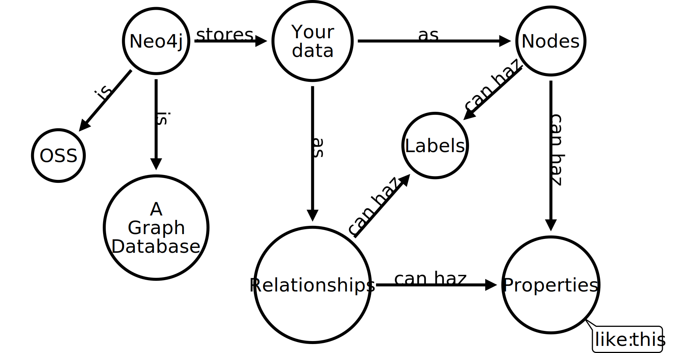
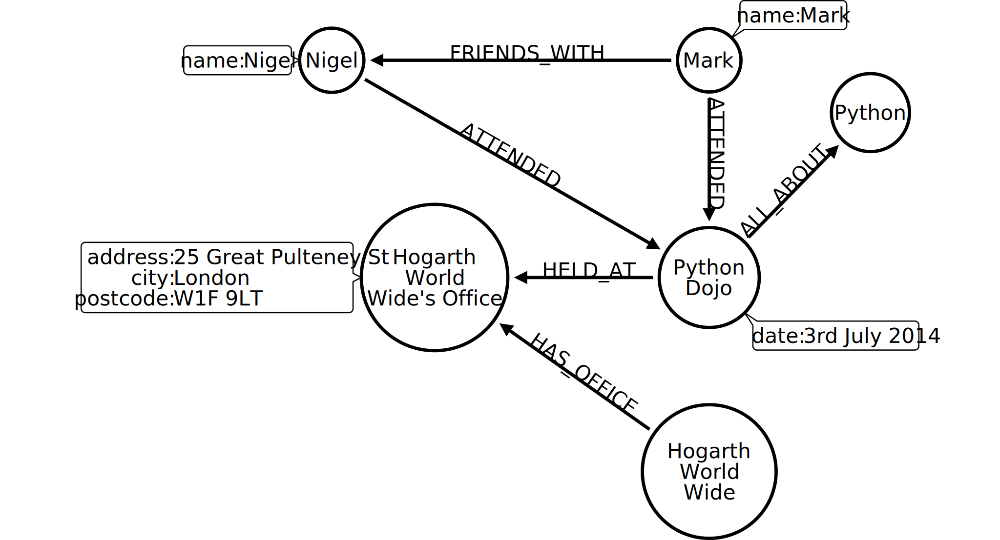
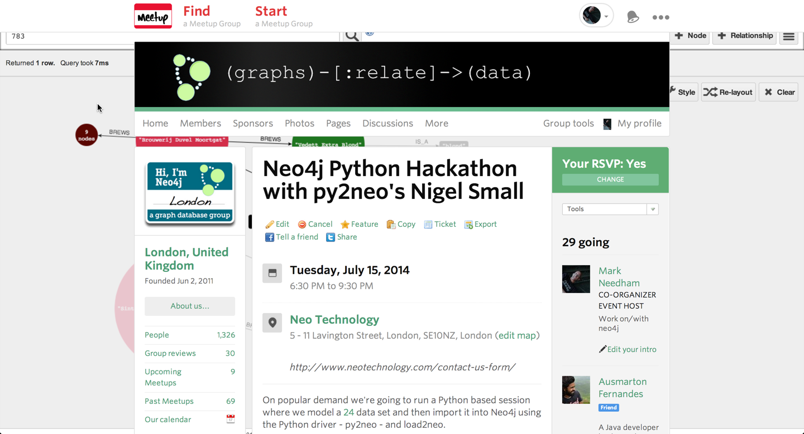

py2neo - Making Python and Neo4j play nicely together
Mark Needham @markhneedham
Nigel Small @neonige
What's Neo4j?

Huh?!

Ok cool, show me
What's Python got to do with it?

Python Driver for Neo4j
Python Driver for Neo4j
Find all the characters
from __future__ import print_function
from py2neo.neo4j import *
graph = GraphDatabaseService()
for char in graph.find("Character"):
print(char["name"])
Find how many episodes a character appeared in
from py2neo import neo4j
graph_db = neo4j.GraphDatabaseService()
q = """MATCH (c:Character)-[a:APPEARED_IN]->(season)
RETURN c.name, sum(a.episodes) AS episodes
ORDER BY episodes DESC"""
query = neo4j.CypherQuery(graph_db, q)
for record in query.execute().data:
print record
Maybe a bit of iPython Notebook Action?
A Python + Neo4j Hackathon
15th July

A Python + Neo4j Hackathon
#!/usr/bin/env python
from bottle import abort, get, run, template
from py2neo.neo4j import GraphDatabaseService, CypherQuery
INDEX = """\
24 Wiki
"""
CHAR_LIST = """\
Characters
%for char in chars:
- {{char.name}}
%end
"""
CHAR = """\
{{char["name"]}}
- Played by:
- {{actor["name"]}}
- Appearances:
-
%for appearance in appearances:
- {{appearance.end_node["name"]}} ({{appearance["episodes"]}} episodes)
%end
"""
"""
# Set up a link to the local graph database.
graph = GraphDatabaseService()
@get('/')
def index():
""" Simply return the index page.
"""
return template(INDEX)
@get('/char/')
def char_list():
""" Fetch a list of all known characters, ordered by name and render
them within the CHAR_LIST template.
"""
query = "MATCH (c:Character) RETURN c.name AS name ORDER by c.name"
return template(CHAR_LIST, chars=CypherQuery(graph, query).execute())
@get('/char/')
def char(name):
""" Display details of a particular character.
"""
# Look for a node with a "Character" label and a "name" property
# matching the name passed in.
found = graph.find("Character", "name", name)
try:
# Pick up the first node found.
char = next(found)
except StopIteration:
# If no nodes are found, throw a 404.
abort(404, "Character not found")
else:
# Otherwise pick up some more data and render a template.
actor = next(char.match_incoming("STARRED_AS")).start_node
appearances = char.match_outgoing("APPEARED_IN")
return template(CHAR, char=char, actor=actor, appearances=appearances)
if __name__ == "__main__":
run(host="localhost", port=8080)
Come along!
Learn you some Neo4j and teach us some Python for great good